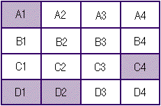
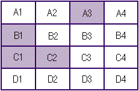
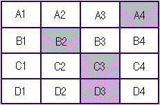
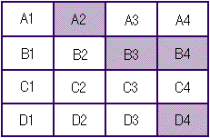
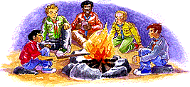
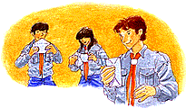

|
|
Type d'Activité: Jeu Durée: 2 heures Lieu: Au local de l'Unité Participants: L'Unité Le 19º Jamboree Mondial Scout invite les Patrouilles de tous les pays à vivre un moment de rencontre pendant lequel elles pourront échanger et découvrir la richesse des différentes cultures. C'est une très bonne occasion pour renouveler notre engagement envers la paix dans le monde. De nombreux ateliers, ouverts à tous les participants, en relation avec le thème de la paix et la compréhension interculturelle ont été préparés pour le Jamboree. A travers ce jeu, nous proposons à ton Unité et à toi de vous familiariser avec ce thème et de vous préparer à l'aborder. Introduction La paix commence en nous-mêmes et dans notre vie quotidienne. Il nous arrive fréquemment de rencontrer des situations qui nous amènent à rentrer en conflit avec les autres. L'important est que chacun arrive à se remettre en question : Quelle est la chose la plus importante qui empêche de règler le problème? Comment je me comporte dans ces cas-là? Quelle est ma stratégie? Comment réagissent les autres? Voici quelques questions auxquelles vous devrez répondre dans les circonstances fictives que vous amènera à vivre TERRITOIRES CONVOITES. Avant l'activité Pour préparer ce jeu les responsables vont devoir suivre les étapes présentées ci-dessous : 1. Elaborer le plateau de jeu en suivant les instructions suivantes : a) Sur un carton de 1 mètre de long et de 50 centimètres de large dessiner un lieu de camp imaginaire. Pour définir les tracés, se reporter aux informations de l'Annexe 4. Nous vous recommandons de positionner sur le plateau les éléments nécessaires pour le jeu comme le ravin en A1, la vieille construction en B4, la chute d'eau en C3 et le lac en A3. b) Délimiter clairement 16 territoires en marquant bien le numéro qui leur correspond (Annexe 1). c) En suivant les indications de l'annexe 1 disposer les petits drapeaux (bleu, jaune, rouge et vert). Pour les réaliser, nous vous suggérons d'utiliser du fil de fer et du carton ou du tissu. Le principal est qu'on puisse facilement changer les drapeaux de place sur le plateau. 2. Les responsables doivent préparer quatre feuilles d'information différentes dans lesquelles se trouveront les données présentées dans l'Annexe 4 (une pour chaque équipe ou Patrouille). 3. Il faut en plus prévoir une copie de la fiche d'évaluation personnelle de l'Annexe 3 pour chaque participant. N.B : Il est essentiel que les jeunes ne connaissent pas les
règles avant de jouer.
Les transactions s'organisent librement entre les équipes. Il faut que chacune s'approche le plus possible de l'objectif, même si elle ne parvient pas à obtenir tous les territoires convoités. Durée conseillée : 30 minutes Durée conseillée : 5 à 10 minutes 8. Après cette étape le meneur de jeu invite les jeunes
à présenter les résultats obtenus individuellement
et en groupe. Chaque équipe expose à l'Unité l'objectif
qu'elle avait au début du jeu en racontant ses négociations
et ses réussites. Les responsables peuvent aussi reprendre à
haute voix les questions posées sur la fiche d'évaluation
amenant ainsi les jeunes à exprimer librement leur opinion. L'Unité peut alors réfléchir sur les avantages et les inconvénients des stratégies adoptées pour résoudre les conflits et sur la manière de coopérer afin que tout le monde gagne. Durée conseillée : 20 minutes
Nous espérons que ce jeu vous aura permis de mieux vous entendre dans l'Unité et de mieux vous préparer à affronter de manière constructive les conflits qui se présenteront à vous dans l'avenir. Il faut continuer à chercher de nouvelles alternatives pour s'entraider, toujours prêt à sacrifier certains besoins pour en satisfaire d'autres. Annexe 1 ATTRIBUTION DES TERRITOIRES PROPOSITION DE SOLUTION
Annexe 3 FICHE D'EVALUATION PERSONNELLE
2. Pourquoi les qualifies-tu ainsi ?
4. Pourquoi penses-tu cela ? 5. Vous avez obtenus les territoires indispensables pour atteindre votre
objectif ?
6. Vous êtes arrivés à obtenir le nombre souhaité
de parcelles, et à côté les unes des autres ?
7. Comment estimes-tu la proportion de ce qui a été obtenu
et de ce qui a été cédé par ton équipe?
8. Comment as-tu affronté les difficultés ? - En défendant ma position 9. Comment t'es-tu senti en adoptant cette stratégie ? Annexe 4 INFORMATIONS 1 Les parcelles que l'on vous a attribuées sont dispersées sur le plan. Ce sont les A1, C4, D1 et D2. 
INFORMATIONS 2 Vous vous êtes préparés pendant toute l'année pour réaliser durant ce camp un Sentier Naturel dans les environs. Vous voulez indiquer le nom de chaque espèce que l'on rencontre en chemin. Les parcelles A3, B1, C1 et C2 vous sont
attribuées.
INFORMATIONS 3 Vous avez élaboré un projet technologique permettant de produire du courant électrique. L'idée est d'installer l'électricité dans votre secteur grâce à une dynamo installée sur une roue à aubes. Les parcelles qui vous sont assignées sont A4, B2,
C3 et D3.
Vous vous êtes fixés de réaliser des travaux communautaires et vous avez déjà établi une série de contacts avec les représentants locaux. Les parcelles qui vous sont attribuées sont A2, B3,
B4 et D4.
Type d'activité: Atelier Durée: 2 heures Lieu: Au local ou en Camp Participants: L'Unité De nos jours, le monde entier s'accorde pour affirmer que tous les hommes
sont égaux en dignité et en droits. Certes, ils sont profondément
différents dans l'expression de leur culture et de leur personne
même. Dans ce contexte, la Paix revêt une grande importance,
comme l'unique athmosphère qui permet le bonheur, le développement
de chacun, et en même temps, l'expression de la différence. Le 19º Jamboree Mondial Scout propose de réunir des jeunes de différnts pays sous le thème "Ensemble Bâtissons la Paix". C'est pour cela, que nous aimerions amener chacun à réfléchir et à s'interroger, par exemple, sur ce que signifie la paix et comment la promouvoir autour de soi. A travers cet atelier, nous proposons un ENGAGEMENT POUR LA PAIX, qui s'unira à celui de nombreux scouts de toute la planète. Avant l'activité
Nous recommandons de couvrir une large variété de conflits, sur la scène internationale autant que nationale, régionale ou locale, voire sur le plan personnel. Déroulement de l'activité 1. Lancement. L'Unité se réunit au complet et les responsables partagent l'information qu'ils ont collecté. Nous suggérons d'aborder les thèmes du plus général au plus particulier, en montrant que la paix est indispensable à tous les niveaux de la société. Tous doivent pouvoir s'exprimer librement et, ensemble, identifier les différentes significations du concept ; on les notera au fur et à mesure sur le Paper-Board. Pour faciliter la discussion, le responsable de l'atelier peut signaler quelques exemples:
3. Sous forme de brainstorming, les participants proposent autant d'actions concrètes pour permettre une athmosphère de paix. Penser à ce qui pourrait se faire dans n'importe lequel de ces cas, à tous les niveaux. On prendra note sur le Paper-Board. Durée conseillée: 20 minutes 4. Après ce temps de réflexion, la maîtrise invite chacun à faire son ENGAGEMENT POUR LA PAIX. Pour que tous puissent formuler leur engagement, le responsable de l'atelier
propose de se centrer sur la vie personnelle et donne les consignes suivantes: Si besoin est, on signalera: a) Si quelqu'un désire s'engager dans la lutte pour la paix dans le monde, il est important d'envisager les possibilités qui lui permettront d'unir son action à celles des autres dans un effort collectif, par exemple, au sein d'une oraganisation pacifiste. b) Si quelqu'un préfère s'engager pour la paix dans le
cadre de ses cours au lycée, il cherchera à identifier parmi
les attitudes de ses camarades celles qui le dérangent et celles
qui le reconfortent. Puis il s'interrogera sur ses réactions face
à eux. Enfin, il établira des actions concrètes pour
collaborer à une ambiance de paix: respecter l'autre quand il donne
son avis, recevoir positivement les critiques, encourager les négociations
au moment de prendre une décision, en aucun cas agresser physiquement
ou verbalement un autre élève, etc. Durée conseillée: 15 minutes 5. Activité personnelle. Les responsables distribuent à chacun un papier et un crayon. Chacun va écrire son ENGAGEMENT POUR LA PAIX, les actions concrètes et les délais fixés pour atteindre l'objectif. Il est important que tous se sentent libres de choisir un lieu tranquille pour rédiger son engagement. Les responsables se rendent alors disponibles pour répondre à toute question. Les participants également peuvent résoudre entre eux des interrogations, deux par deux ou en petits groupes de trois ou quatre. Il n'y a pas d'inconvénient non plus à ce que certains rédigent un engagement commun. Durée conseillée: 15 minutes 6. Activité de Patrouille. Quand tous ont terminé, le responsable de l'atelier invite les Patrouilles à se rassembler séparément. Accompagné par un membre de la maîtrise, les participants échange à tour de rôle leurs engagements respectifs. Prévoir 2 à 3 minutes par personne plus quelques instants pour que le reste de la Patrouille puisse poser des questions. NB: les questions peuvent aider chacun à clarifier ses idées, voire à ajouter quelques détails et compléter son engagement. L'échange permettra de plus d'analyser à quel point tel objectif sera réalisable. Durée conseillée: 30 minutes Les responsables assurent que chacun pourra compter sur l'appui de la
Patrouille et de l'Unité pour atteindre son objectif. NB: L'expérience a montré que des débats peuvent surgir, mettant en cause que tel objectif, action ou délai n'est pas réalisable. Avec beaucoup de précaution les responsables veilleront à ce que la discussion ne tourne pas en un débat centré sur un seul individu. Pour conclure, les responsables insistent sur le fait que cet engagement est personnel: personne d'autre que soi n'en est le garant. En cela, il s'agit d'un défi un peu spécial. Durée conseillée: 20 minutes 8. Activité de Patrouille. De nouveau, les Patrouilles se réunissent séparément. Chaque scout reçoit d'un membre de la maîtrise une petite enveloppe dans laquelle il dépose son engagement ; il la ferme et inscrit son nom dessus. Toutes les enveloppes sont ramassées et rangées avec les archives de l'Unité, où elles restent à la disposition des jeunes. Observation pour les responsables
Nous espérons que cet atelier vous aura permis de vous familiariser avec les différentes dimensions de la paix. L'important est que ton Unité et toi ayez conscience que la paix est une oeuvre à laquelle nous pouvons collaborer chaque jour, en mettant en pratique nos valeurs profondes.
Cette activité a été extraite et adapté du livre "Jeux pour la Paix et la Compréhension Humaine",publiée par les "Ediciones de Extensión Guías y Scouts de Chile".
[Territoires Convoités][Mon Engagement Paix] |